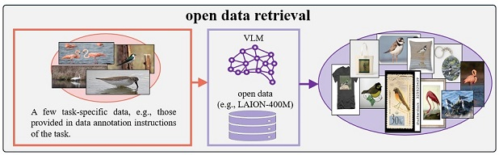

Shu Kong | Computer Vision Lab
research in computer vision, machine learning, robotics, NLP, HCI, graphics, interdisciplinary research (e.g., plant biology, paleoecology, and special education.)
Home
Publication
Datasets
Group
Contact
We release out developed datasets and benchmarking protocols that have supported our research projects.

Data retrieved from LAION-400M to study Retrieval-based Augmented Learning (RAL)
A High-Resolution for Instance Detection with Multi-View Instance Capture
Dataset to Study Instance Tracking in 3D Scenes from Egocentric Videos
A Benchmark to Study Few-Shot Detection from Annotation Guidelines
Data to Study Unstructured Unlabeled Optical Motion Capture
AccessDB: A Dataset for Auto-detecting Inaccessibility of Everyday Objects
A Benchmark to Study Long-Tailed 3D Detection
UAL-Bench: A Benchmark for Unusual Activity Localization in Videos
Dataset for Shoeprint Identification in Crime Scenes
Dataset for Open-Vocabulary Part Segmentation
Dataset for Image Aesthetics Rating
Dataset for Fossil Pollen Recognition
Dataset for C. elegans segmentation, body shape estimation, and age estimation
Dataset for Pollen Grain Detection